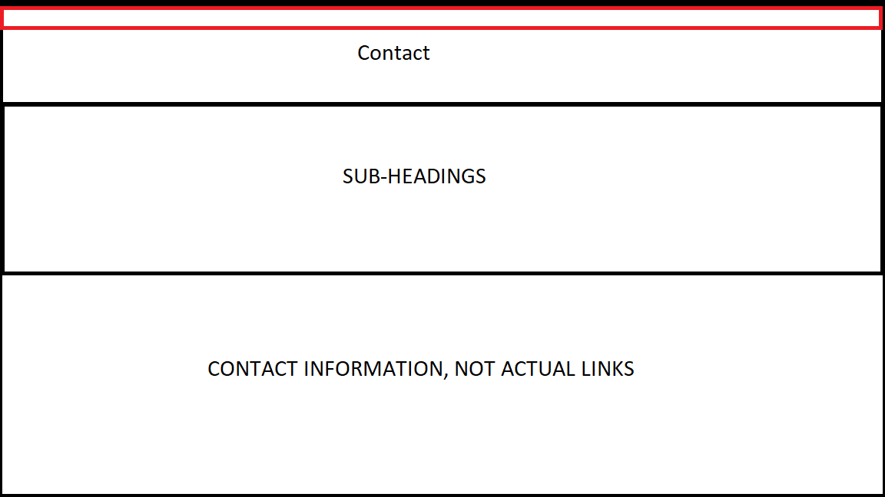
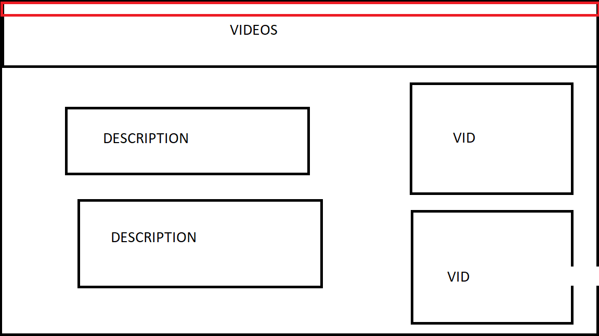
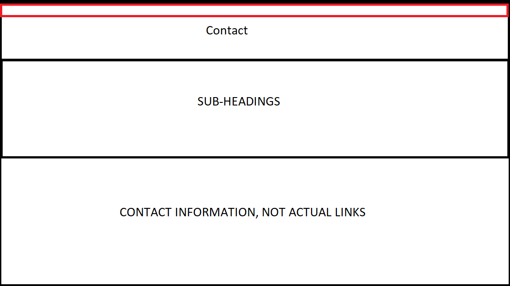
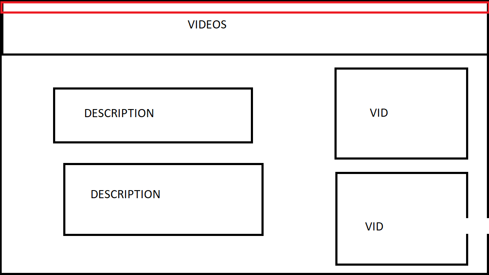

WHY AND HOW?
API POST:
This is the post about APIs and how I have implemented it into my site:
DOWNLOAD API POST
Character Rationale:
My character is really just a socially awkward person in real life, although his online persona is welcoming
because he finds it easier to communicate through a website, and be able to display various content.
The idea of creating someone that resembles me sounded fun; the resemblance being that we are both socially awkward,
attending the University of the Witwatersrand, having a slight bit of a "moody" personality yet still trying to be kind
to everyone. Also, creating someone with these traits can be somewhat relatable to other people, and having the sense of
being able to relate to a person/character, makes people want to know more about these characters.
Portraying a character that is into art and will do commissioned artworks feels realistic, much like freelance profiles that
you can find on sites like Fiverr, although this being more for recreational use, rather than serious commissions - that's
one of the reasons why my character would most likely create a website.
Another reason why my character would create a site would be to display their artwork, worldwide, to get views from more people
and have the possibility of international companies that want to hire him.
Incorporating our blog posts into the site, it then becomes research that my character is doing, in order to better his website
and his knowledge in Web Design.
Website Style Guide:
This website style has changed frequently, throughout each assignment submission, from just content to changing navigational links too.
Although, this is the final submission, there is more content that I would like to add, such as more videos and even creating proper
social media links, adding content on the different platforms, for my character to use.
On my content pages, the content moves above my nav bar, I did not mean for this to happen as it worked perfectly fine,
I do not have enough time to fix it, but everything still works.
Colour Palette:
The colours that I have chosen for the majority of the site: Red, Black and White. The black background makes the site easier on your
eyes, as there is less white light coming in, as well as it looks a bit ominous. Red highlights the main headings, to differentiate
between headings and paragraphs, with the navigation bar also being red, this stands out when scrolling and goes with the colour
scheme. The white text stands out on the black background and it brings in a bit of light into the web pages.
The main headings are white, while the sub-headings are red.
These colours also set a nice tone for the site; this being mysterious and matching my character's personality (mysterious and only
shows his online persona).
Fonts Used:
Personally, I am a big fan of the "Arial" font, it makes the text look bold. It is also easy to read while scrolling through the site. Although, in some cases, there are a few bold headings to show that they are headings, while sticking to the colour patterns used. Times New Roman reminds me way too much of university essays, for some reason, so I decided to not use it at all, the trauma of University essays is real.
Mood Board:
The overall mood seems to be determined by the colour schemes and content used throughout the site. When creating the site, initially I did want to put a lot less content and information about my character as his personality was not very open. This idea had changed because it did not fit the requirements of having a fully fleshed out and developed character. The mood of the site developed as more content and information had been added. The site still should have a bit of a mysterious, ominous tone to it, due to the colour scheme, and how there is not a lot of personal information about my character but rather casual information that still portrays them.
Content pages:
There are about 4 pages of content, I decided to put different content on it's own pages, therefore it is easier to navigate.
- Blog Content: These are in boxes with frames, the sorting seemed more organised in idividual boxes with titles in bold. These boxes
go over my nav bar, this was not intended as it worked before. Although, components still do work, and there are download links that are
indicated by asterisks.
- Content Page: This is my own art and some blogs that I have writeen, that relate to my character, blogs about a cat, art supplies and
a game review. These all relate to my character's oersonality, he loves art, cats and games. The page has the same problem as the
blogs page. But the components still do work. There are descriptions on the enlarged images as extra description.
- Video Content: There are 4 videos, 2 of these being my character's interests, and the other two are Johannesburg content. To
show my character's engagement with with street art and a video of Wits, to show that he likes where he is studying.
- Cat Pictures: My character loves cats, so there is a page that generates cat pictures from a Github Repo, with the click of a button.
This was made for the API framework of my site, it isn't a lot, but it does effectively gather information from an external source.
Content Used:
Some of the content that I had added is actually my own content. Considering that my character has some of my personal traits, as explained
above, the artworks would genuinely be the same, with the same interests in basic things like: Music, series and even art styles.
The other content used:
- Cat Pictures: My character loves cats (Who Doesn't!), and he finds a small bit of happiness
when he sees cat posts, therefore he shares them on his site to share some happiness with his viewers too.
- Johannesburg Pictures: This is a requirement for the website, so I tried to incorporate my character as best as I could into Jhb.
Although the pictures are just from the internet, they act as my character's content, considering I actually do not have any personal
pictures that I have taken in Jhb, and Covid restricts me from actually going out and taking pictures, as much as I would love to.
- Blog Posts: These are the required, weekly posts that we had to reflect on. It is incorporated into the site as research that my
character is doing, in order to better his site and he likes to write about the information he learns and finds interesting.
Things I Wish I Could Have Added:
There is a lot more that I wish I could have implemented to refine and develop my website even more. Such as: Adding more of my own
content, some fun mini-games on different pages, more interactable features (Buttons that change colours when clicked, images that
switch by themselves, like a gallery) and even more personal blogs.
- Something that I would have added is a login page, where a viewer creates a username and password, and can personally log into the site.
- Another cool thing would have been to subscribe to my newsletter, where emails would be sent weekly to a registered email
address that the viewer adds.
- Working social media accounts on different platforms that actually have content based on my character and their interactions with
the city and people (Although limited, because being socially awkward is a thing, LOL).
First Set Of Wireframes:
This is the first attempt at wireframes, there is no styling (CSS), it is just basic html, the skeleton
of the website.
There are a lot of ways in which the site can be improved, other than just using CSS.
There can be the placement of the links on the site that can be improved, being more accessible to users.
Second Set Of Wireframes:
This is the second attempt at creating the wireframes, a lot has changed. There is a navigation bar that only
pops up when the user scrolls to the bottom of the page. I had this idea when I was doing a Reflection
on of the blog posts, with data that people just skim through sites and not really read the content,
here, the viewers can read the content, but have to scroll to the bottom.
There is a few pictures of jhb structures. I also removed the contact page.
Third Set Of Wireframes:
This is the third attempt. I had to change the navigation bar that only works at the bottom of the page
because I was told that it isn't good to force users to scroll to the bottom to change pages.
There is also more jhb content, as well as personal blogs and videos now. I added the contact page back.
I have also changed the postioning of pictures and text, so it is more in the middle, and it looks a bit more clean.
Final Set Of Wireframes:
 



This is the final attempt. I had added 3 more pages. I removed that contact page in the last assignment, so I added it back, although the links are not real and interactable. There is the video content page and the cat content page. These two pages have random cat pics that are generated from the internet and the video content page, these are downloaded videos to add more content, and how I interact with Johannesburg. The layout of the blogs page and content page had changed, these are now still buttons but I did not make them proper modal images, they just enlarge at the bottom of the pages with a short description, if necessary.